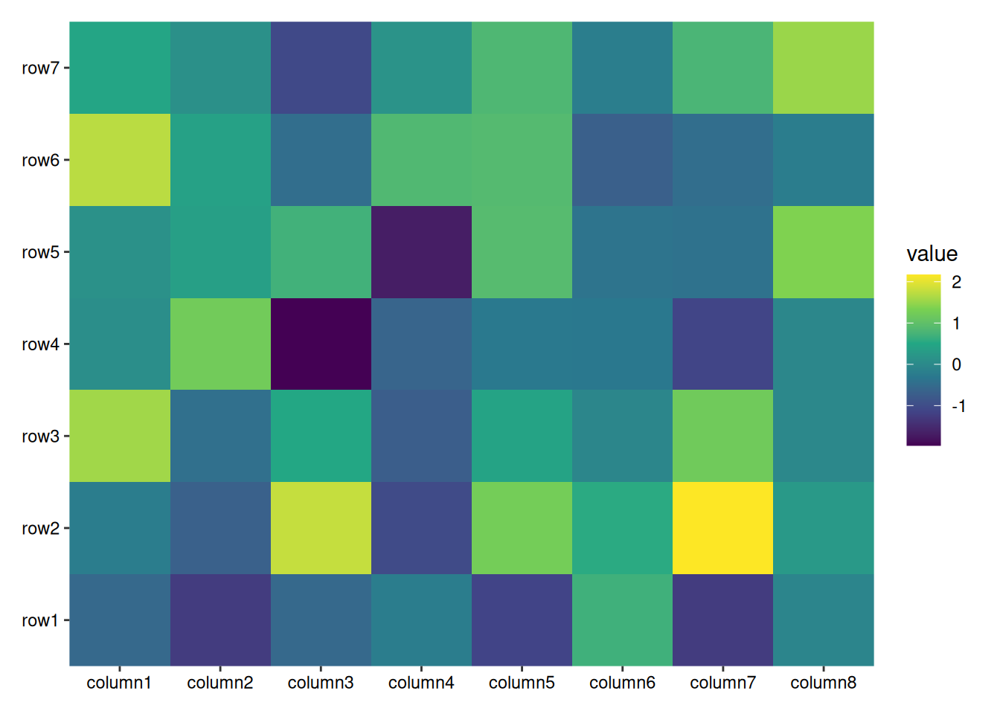
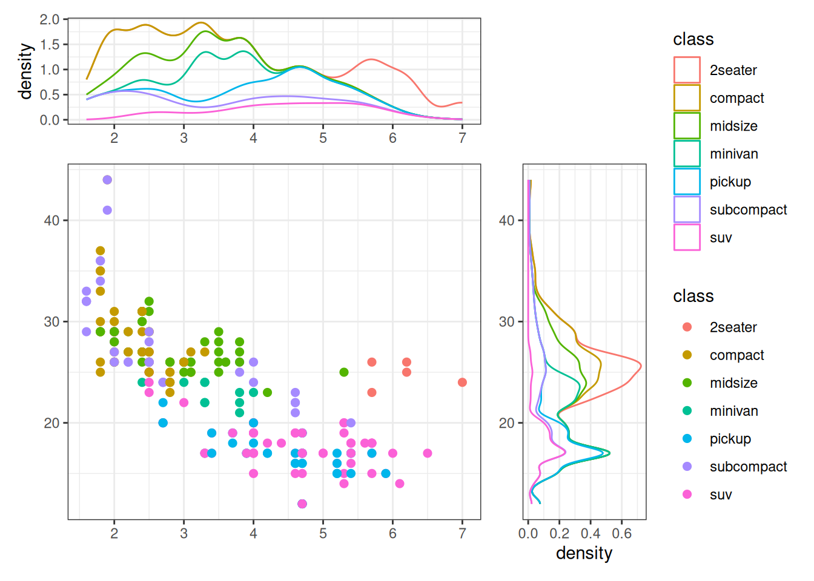
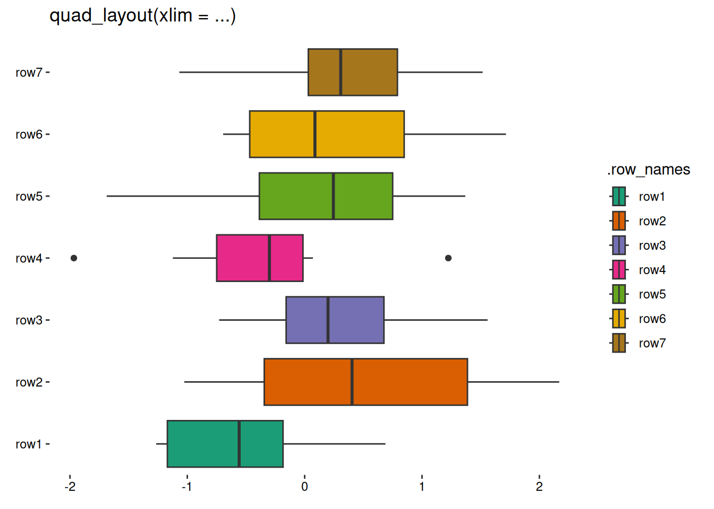
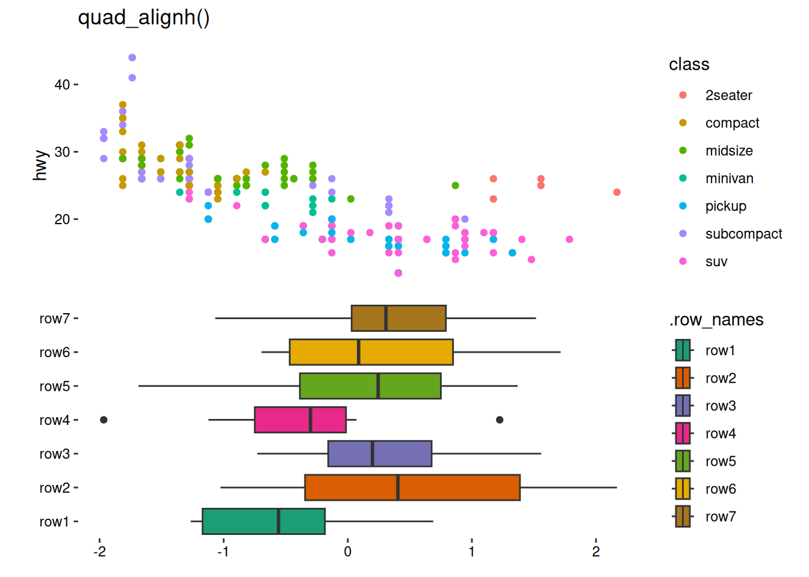

7 quad-layout
quad_layout() arranges plots around the quad-sides of a main plot, aligning both horizontal and vertical axes, and can handle either discrete or continuous variables.
Code
library(ggalign)
set.seed(123)
small_mat <- matrix(rnorm(56), nrow = 7)
rownames(small_mat) <- paste0("row", seq_len(nrow(small_mat)))
colnames(small_mat) <- paste0("column", seq_len(ncol(small_mat)))7.1 Introduction
Depending on whether you want to align discrete or continuous variables in the horizontal and vertical direction, there are four main types of quad_layout():
| Alignment of Observations | horizontal | vertical | Data Format |
|---|---|---|---|
quad_continuous()/ggside() |
continuous | continuous | data frame |
quad_layout(xlim = ...) |
discrete | continuous | matrix |
quad_layout(ylim = ...) |
continuous | discrete | matrix |
quad_discrete()/ggheatmap() |
discrete | discrete | matrix |
7.2 Annotations
Annotation is typically handled using a stack_layout(). Depending on whether you want to align observations in the specified direction, different stack_layout() are compatible (Section 6.5). Below is a table outlining the compatibility of various layout types for annotations:
| Annotations | left and right | top and bottom |
|---|---|---|
quad_continuous()/ggside() |
stack_continuous() |
stack_continuous() |
quad_layout(xlim = ...) |
stack_discrete() |
stack_continuous() |
quad_layout(ylim = ...) |
stack_continuous() |
stack_discrete() |
quad_discrete()/ggheatmap() |
stack_discrete() |
stack_discrete() |
7.3 quad_discrete()
quad_discrete() aligns discrete variables in both horizontal and vertical directions. It serves as the base version of ggheatmap()/heatmap_layout() and does not automatically add default layers or mappings.
The underlying ggplot data of the main plot is the same with ggheatmap()/heatmap_layout() (Section 6.2), it is recommended to use .y, or .discrete_y as the y mapping and use .x or .discrete_x as the x mapping in the main plot.
quad_discrete(small_mat, aes(.x, .y)) +
geom_tile(aes(fill = value)) +
scale_fill_viridis_c()
7.4 quad_continuous()
quad_continuous() align continuous variables and is functionally equivalent to the ggside package. For convenience, ggside() is provided as an alias for quad_continuous(). This layout is particularly useful for adding metadata or summary graphics along a continuous axis.
ggside(mpg, aes(displ, hwy, colour = class)) +
geom_point(size = 2) +
# initialize top annotation
anno_top(size = 0.3) +
# add a plot in the top annotation
ggalign() +
geom_density(aes(displ, y = after_stat(density), colour = class), position = "stack") +
# initialize right annotation
anno_right(size = 0.3) +
# add a plot in the right annotation
ggalign() +
geom_density(aes(x = after_stat(density), hwy, colour = class),
position = "stack"
) &
theme_bw()
ggside() allows facetting for the main plot, which should also be applied to the annotations for proper alignment.
i2 <- iris
i2$Species2 <- rep(c("A", "B"), 75)
ggside(i2, aes(Sepal.Width, Sepal.Length, color = Species)) +
geom_point(size = 2) +
facet_grid(Species ~ Species2) +
anno_top(size = 0.3) +
ggalign() +
geom_density(aes(Sepal.Width, y = after_stat(density), colour = Species),
position = "stack"
) +
facet_grid(cols = vars(Species2)) +
anno_right(size = 0.3) +
ggalign() +
geom_density(aes(x = after_stat(density), Sepal.Length, colour = Species),
position = "stack"
) +
facet_grid(rows = vars(Species)) &
theme_bw()If an annotation contains multiple plots, it can be tedious to add the same element to each one individually. One way to simplify this is by creating an external stack_layout() and adding the desired elements using the & operator. Then, you can add this stack_layout() to the quad_layout(). In Chapter 13, I will introduce another more powerful operator that seamlessly combines with the + operator, allowing you to add elements to multiple plots at once.
7.5 quad_layout()
This function arranges plots around the quad-sides of a main plot, aligning both horizontal and vertical axes, and can handle either discrete or continuous variables.
- If
xlimis provided, a continuous variable will be required and aligned in the vertical direction. Otherwise, a discrete variable will be required and aligned. - If
ylimis provided, a continuous variable will be required and aligned in the horizontal direction. Otherwise, a discrete variable will be required and aligned.
quad_layout(small_mat, xlim = NULL) +
geom_boxplot(aes(value, .discrete_y, fill = .row_names)) +
scale_fill_brewer(palette = "Dark2") +
layout_title("quad_layout(xlim = ...)")
quad_layout(small_mat, ylim = NULL) +
geom_boxplot(aes(.discrete_x, value, fill = .column_names)) +
scale_fill_brewer(palette = "Dark2") +
layout_title("quad_layout(ylim = ...)")As discussed in Section 6.4, quad_anno() will always attempt to initialize a stack_layout() with the same alignment as the current direction. For top and bottom annotations in quad_layout(xlim = ...), and left and right annotations in quad_layout(ylim = NULL), quad_anno() will not initialize the annotation due to inconsistent data types.
quadh <- quad_layout(small_mat, xlim = NULL) +
anno_top()
#> Warning: `data` in `quad_layout()` is a double matrix, but the top annotation stack need
#> a <data.frame>, won't initialize the top annotation stack
quadv <- quad_layout(small_mat, ylim = NULL) +
anno_left()
#> Warning: `data` in `quad_layout()` is a double matrix, but the left annotation stack
#> need a <data.frame>, won't initialize the left annotation stackManual adding of a stack_layout() is required in such cases, you can set initialize = FALSE to prevent the warning message.
quadh <- quad_layout(small_mat, xlim = NULL) +
anno_top(initialize = FALSE)
quadv <- quad_layout(small_mat, ylim = NULL) +
anno_left(initialize = FALSE)quadh +
stack_continuous("v", mpg) +
# add a plot in the top annotation
ggalign(mapping = aes(displ, hwy, colour = class)) +
geom_point(aes(displ, hwy, colour = class)) +
quad_active() +
geom_boxplot(aes(value, .discrete_y, fill = .row_names)) +
scale_fill_brewer(palette = "Dark2")+
layout_title("quad_alignh()")
quadv +
stack_continuous("h", mpg) +
# add a plot in the left annotation
ggalign(mapping = aes(displ, hwy, colour = class)) +
geom_point(aes(displ, hwy, colour = class)) +
quad_active() +
geom_boxplot(aes(.discrete_x, value, fill = .column_names)) +
scale_fill_brewer(palette = "Dark2") +
layout_title("quad_alignv()")Alternatively, you can set initialize = TRUE, which will initialize the annotation stack layout with no data. In this case, you must provide data in each plot within the annotation.
quad_layout(small_mat, xlim = NULL) +
geom_boxplot(aes(value, .discrete_y, fill = .row_names)) +
scale_fill_brewer(palette = "Dark2") +
anno_top(initialize = TRUE) +
ggalign(data = mpg, aes(displ, hwy, colour = class)) +
geom_point(aes(displ, hwy, colour = class))+
layout_title("quad_alignh()")
quad_layout(small_mat, ylim = NULL) +
geom_boxplot(aes(.discrete_x, value, fill = .column_names)) +
scale_fill_brewer(palette = "Dark2") +
anno_left(initialize = TRUE) +
ggalign(data = mpg, aes(displ, hwy, colour = class)) +
geom_point(aes(displ, hwy, colour = class))+
layout_title("quad_alignv()")
In the next chapter, we will explore even more advanced techniques for combining multiple quad_layout()s. These methods will provide you with the tools to manage more complex plot arrangements and make your visualizations even more flexible and powerful.